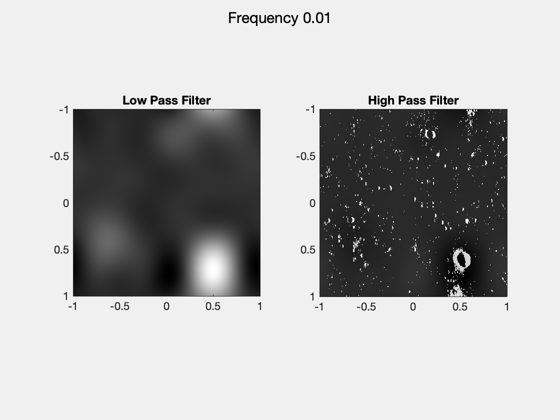
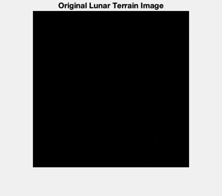
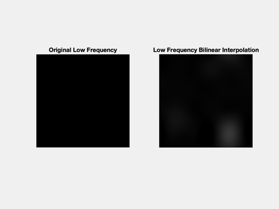
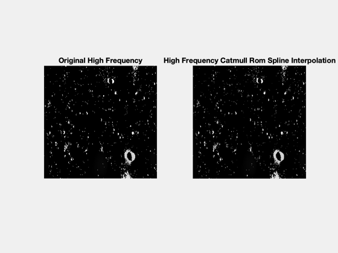
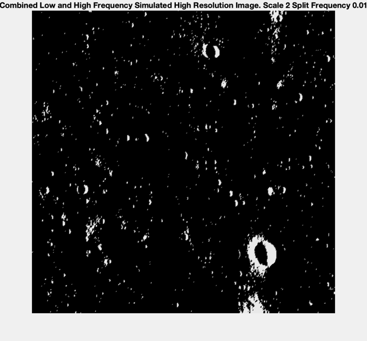
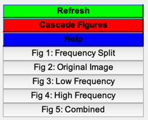

Contents
SyntheticTerrain is a script created to create synthetic terrain
Allan et al.'s work https://doi.org/10.1109/AERO.2019.8741780 to create a s terrain generator for the lunar surface to create high resolution images from the currently available low resolution images from http://imbrium.mit.edu/
This script upscales the input image and outputs a synthetic higher resolution version of the input image:
1. separates the high and low frequencies of the input image 2. performs fractal synthesis by the diamond-square method on the high frequency portion of the image and uses the Catmull-Rom spline interpolation method to generate new data 3. performs bilinear interpolation on the low frequency component of the image 4. recombines the high and low frequencies of the input image and returns the final image
key input variables the user can change:
c_img - the input image (this should be a dem but the script was mostly tested on optical images. may need different frequency splitting method for low contrast dems avaialable.) the input image needs to be a square with even # of pixels. I recommend starting with a small 500x500 image.
scale - determines the upscaling of the input image. this needs to be a power of 2. i.e. scale = 2, 4, 8, 16 etc.
freq - determines the frequency split between high and low frequencies. make use of the figure showing the frequency split to determine what the frequency should be for the input image. This needs to be between [0,1].
interp - sets the interpolation method. by default this is 'spline' for Catmull-Rom Spline and 'linear', or linear interpolation, is only used on edge cases. However this can be changed to 'linear' for the entire image for comparison. This can only be 'spline' or 'linear'.
key outputs:
hmap - final heightmap. this is the upscaled input image. size will be scale*input image size
method - matrix with indices indicating if a pixel was interpolated with the square or diamond method and the iteration number. 1:iter_max are squares for each iteration. iter_max+1:iter_max+iter_max are diamonds for each iteration. useful for debugging or for understanding final image artifacts.
Online resources:
Diamond-square method https://stevelosh.com/blog/2016/06/diamond-square/
catmull rom spline https://en.wikipedia.org/wiki/Centripetal_Catmull%E2%80%93Rom_spline
%-------------------------------------------------------------------------- %-------------------------------------------------------------------------- % Copyright (c) 2021 Princeton Satellite Systems, Inc. % All rights reserved. %-------------------------------------------------------------------------- % Since version 2021.1 %-------------------------------------------------------------------------- % Lunar image file = 'LunarSurfaceImage.png'; dem = imread(file); demt = dem/max(dem(:)); c_img = demt(1:512,1:512);
Fourier transform to separate high and low freq data
Taken from Maggie Kautz's homework for OPTI 512L from UArizona fourier transforms to split high and low frequencies by freq input variable
% Fourier transform original image F = fftshift(fft2(fftshift(c_img))); % Make a meshgrid the same size as input image xi = linspace(-1,1,length(c_img)); eta = xi; [XI, ETA] = meshgrid(xi,eta); % Change this variable to change frequency split freq = 0.01; % bounds [0,1] % Use meshgrid to greate high and low pass filters LPF = (abs(XI) < freq) & (abs(ETA) < freq); %low pass filter only lets in xi < abs(freq) frequencies HPF = 1 - LPF; % high pass filter blocks xi < abs(freq) frequencies % Use high and low pass filters on fourier transform of the original image Img_LPF = F.*LPF; Img_HPF = F.*HPF; % Inverse fourier transform to return data we can use img_lpf = fftshift(ifft2(fftshift(Img_LPF))); img_hpf = fftshift(ifft2(fftshift(Img_HPF))); % Take real portion of inverse fft for visualization purposes lpf_data = real(img_lpf); hpf_data = real(img_hpf); % Make real portion of fft into rgb images for visualizations at the end of % the code lpf_img = imRGB(lpf_data,255); hpf_img = imRGB(hpf_data,1); % Plot frequency split to see if freq variable needs to be changed NewFig('Frequency Split'); subplot(1,2,1) imagesc(xi,eta, lpf_data) colormap(gray) axis square title('Low Pass Filter') subplot(1,2,2) imagesc(xi,eta, hpf_data) colormap(gray) axis square title('High Pass Filter') sgtitle(sprintf('Frequency %0.2f',freq))
High freq: square-diamond interpolation
% perform square-diamond interpolation only on high frequency portion image = hpf_data; % get size of high frequency portion [m,n] = size(image); % set upscaling factor (needs to be power of 2: 2,4,8,16, etc.) scale = 2; % set interpolation method (either 'linear' or 'spline') interp = 'spline'; % initilize heightmap and diamond-square method output hmap = zeros(m*scale,n*scale); method = zeros(m*scale,n*scale); % add existing data to heightmap original_x = zeros(m*n,1); original_y = zeros(m*n,1); count = 1; for i = 1:m for j = 1:n % position original data determined by scale*x+1,scale*y+1 % starts at 1,1 when x=y=0 hmap(scale*(i-1)+1,scale*(j-1)+1) = image(i,j); % save position of original data original_x(count) = scale*(i-1)+1; original_y(count) = scale*(j-1)+1; count = count + 1; end end % rename original data to square input variables s_in_x = original_x; s_in_y = original_y; iteration = 1; % increases for each iteration of square+diamond iter_max = log(scale)/log(2); % max # of iteration determined by scale for i = 1:iter_max [hmap, so_x, so_y, method] = square(hmap, interp, iteration, scale, m, n, s_in_x, s_in_y, method); [hmap, s_in_x, s_in_y, method] = diamond(hmap, interp, iteration, scale, m, n, so_x, so_y, method); iteration = iteration + 1; end
Low freq: bilinear interpolation
% use matlab function to bilinear interpolate low frequency data bi = imresize(lpf_data,scale,'bilinear');
Rejoin frequencies
recombine processed high and low frequencies
combo = hmap + bi; % normalize combo = combo/max(combo,[],'all'); % make rgb for visualization combo_rgb = imRGB(combo,1);
Plotting
% Original terrain image NewFig('Original Image'); imshow(c_img) title('Original Lunar Terrain Image') % subplots to see before and after for low and high frequencies NewFig('Low Frequency'); subplot(1,2,1) imshow(lpf_img) title('Original Low Frequency') subplot(1,2,2) imshow(imRGB(bi,1)) title('Low Frequency Bilinear Interpolation') NewFig('High Frequency'); subplot(1,2,1) imshow(hpf_img) title('Original High Frequency') subplot(1,2,2) imshow(imRGB(hmap,1)) title('High Frequency Catmull Rom Spline Interpolation') % final output image NewFig('Combined'); imshow(combo_rgb) title(sprintf('Combined Low and High Frequency Simulated High Resolution Image. Scale %d Split Frequency %0.2f',scale, freq)) Figui    
Square interpoloation
function [hmap, output_locations_x, output_locations_y, method] = square(hmap, interp, iteration, scale, im_m, im_n, input_location_x, input_location_y, method) % function to perform square portion of square-diamond interpolation fprintf('Performing square iteration %d out of %d\n',iteration,log(scale)/log(2)) % get size of input data m = length(input_location_x); n = length(input_location_y); % initilize arrays to store square locations square_locations_x = zeros(m,1); square_locations_y = zeros(n,1); count = 1; for i=1:m % for size of input data % input data locations x = input_location_x(i); y = input_location_y(i); % if x or y are zero, print and break if (x == 0) | (y == 0) fprintf('Input data is zero. Miscalculated # of outputs of previous function\n breaking at %d of %d\n', i, m) break end % for each input pixel, find distance to next input pixel in x & y distance = scale/(2^(iteration-1)); x_add = distance; y_add = distance; interp_2 = interp; % for all data use original interpolation method % check if pixel is on edge of image x_edge = (x+x_add)>=scale*im_m; y_edge = (y+y_add)>=scale*im_n; input_data=[]; % initialize input data % if input pixel on edge, only take existing data and do linear instead of spline % use linear on edge cases bc spline needs 4 data points if x_edge & ~y_edge input_data = [hmap(x,y),hmap(x,y+y_add)]; interp_2 = 'linear'; elseif y_edge & ~x_edge input_data = [hmap(x,y),hmap(x+x_add,y)]; interp_2 = 'linear'; elseif x_edge & y_edge input_data = [hmap(x,y)]; interp_2 = 'linear'; else % if input pixel not on edge, take surrounding four corner pixels try input_data = [hmap(x,y),hmap(x,y+y_add),hmap(x+x_add,y),hmap(x+x_add,y+y_add)]; catch fprintf('caught error. usually is an out of bounds error. check input_data') end end % use distance to find placement of new square pixel sx = x + distance/2; sy = y + distance/2; % store square pixel locations square_locations_x(count) = sx; square_locations_y(count) = sy; % depending on if pixel is on edge or not, use linear or spline to % interpolate new square pixel value and store in hmap switch interp_2 case 'spline' % take spline average hmap(sx,sy) = CatmullRomSpline(input_data(:)); case 'linear' % take linear average hmap(sx,sy) = mean(input_data,'all'); end count = count + 1; % store square method method(sx,sy) = iteration; end % combine input locations and square locations to pass to diamond function output_locations_x = [input_location_x; square_locations_x]; output_locations_y = [input_location_y; square_locations_y]; end
Performing square iteration 1 out of 1
Diamond interpolation
function [hmap, output_locations_x, output_locations_y, method] = diamond(hmap, interp, iteration, scale, im_m, im_n, input_location_x, input_location_y, method); % function to perform diamond portion of square-diamond interpolation fprintf('Performing diamond iteration %d out of %d\n',iteration,log(scale)/log(2)) % get size of input data m = length(input_location_x); n = length(input_location_y); % initilize arrays to store square locations diamond_locations_x = zeros(2*m - im_m*iteration - im_n*iteration,1); diamond_locations_y = zeros(2*n - im_m*iteration - im_n*iteration,1); count = 1; for i=1:m % for size of input data % input data locations x = input_location_x(i); y = input_location_y(i); % if x or y are zero, print and break if (x == 0) || (y == 0) fprintf('input data is zero. miscalculated # of outputs of previous function\n breaking at %d of %d\n', i, m) break end % distance to next input pixel in x & y distance = scale/(2^(iteration-1)); % if input location is on the bottom or right edge, don't create a new % diamond past the edge of the frame start = 1; stop = 2; if (x + distance/2) >= scale*im_m % only create second diamond start = 2; stop = 2; end if (y + distance/2) >= scale*im_n % only create first diamond start = 1; stop = 1; end if ((x + distance/2) >= scale*im_m) & ((y + distance/2) >= scale*im_n) % create no diamonds and continue to next input location fprintf('Found corner. Continue happening at i = %d out of %d.\n',i,m) continue end % create two diamonds for each input location for k=start:stop if k == 1 % first diamond location xd = x + distance/2; yd = y; end if k == 2 % second diamond location xd = x; yd = y + distance/2; end % store new diamond location for output later diamond_locations_x(count) = xd; diamond_locations_y(count) = yd; % this is the x,y to add to diamond location to find our data to % average x_add = distance/2; y_add = distance/2; interp_2 = interp; % for all data use original interpolation method data = []; % initialize data variable % find four surrounding pixels for diamond average calculation % make sure the x,y we are adding is not past the image frame x_edge = (xd + x_add) > scale*im_m; y_edge = (yd + y_add) > scale*im_n; % edge effects for x if xd == 1 % take only pixel below down = hmap(xd + x_add,yd); data = [data, down]; interp_2 = 'linear'; end if x_edge % take only pixel above up = hmap(xd - x_add,yd); data = [data, up]; interp_2 = 'linear'; end if ~x_edge & xd~=1 % if not on edge % take both pixels above and below up = hmap(xd - x_add,yd); down = hmap(xd + x_add,yd); data = [data, up, down]; end %edge effects for y if yd == 1 % take only pixel to the right right = hmap(xd,yd + y_add); data = [data, right]; interp_2 = 'linear'; end if y_edge % take only pixel to the left left = hmap(xd,yd - y_add); data = [data, left]; interp_2 = 'linear'; end if yd~=1 && ~y_edge % if not on edge % take both pixels to the right and left left = hmap(xd,yd - y_add); right = hmap(xd,yd + y_add); data = [data, left, right]; end % depending on if pixel is on edge or not, use linear or spline to % interpolate new square pixel value and store in hmap switch interp_2 case 'linear' % linear interpolation hmap(xd,yd) = mean(data,'all'); case 'spline' % Catmull Rom spline hmap(xd,yd) = CatmullRomSpline(data); end count = count + 1; % store diamond method method(xd,yd) = iteration + log(scale)/log(2); end end % combine input locations and square locations to pass to square function output_locations_x = [input_location_x; diamond_locations_x]; output_locations_y = [input_location_y; diamond_locations_y]; end
Performing diamond iteration 1 out of 1 Found corner. Continue happening at i = 262144 out of 524288. Found corner. Continue happening at i = 524288 out of 524288.
Generate an RGB image
function to make input an rgb image. can convert uint 8 to double by using scale = 255.
function image_out = imRGB(image_in,scale) image_out(:,:,1) = image_in/scale; image_out(:,:,2) = image_in/scale; image_out(:,:,3) = image_in/scale; end %--------------------------------------